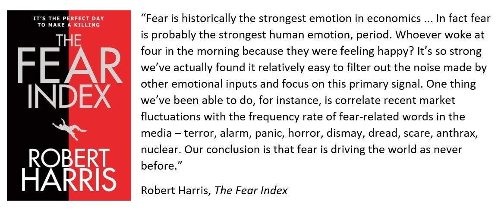
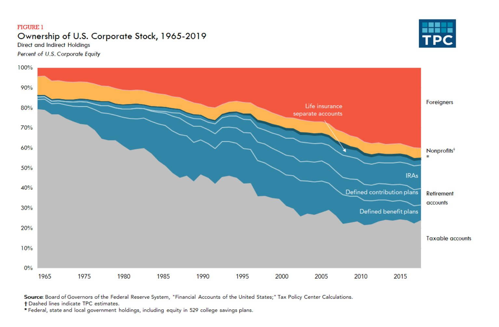
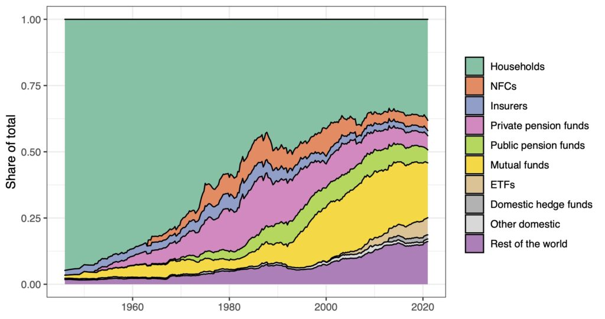

13 Ownership
13.1 Fear
In the twenty-first century, capitalist power is imposed through a highly mechanical ritual of differential capitalization – an unrelenting imperative to outperform, to beat the average, to expand one’s own assets faster than others.
Differential capitalization abstracts from – and indeed denies – all social classes and hierarchical groupings; everyone now is an ‘agent’, differentiated only by the size of his or her investable assets.
Differential capitalization flattens the world, making human relations seem anonymous. The implied automaticity of differential capitalization eliminates guilt, thus absolving capitalists from being responsible for their (own?) actions. “In my fund, Hoffmann boasts, everything is outsourced – security, accounting, legal council, offices, transportation and technical support are all externalized through the market: ‘we want to be digital … we try to be as frictionless as possible”
In every mode of power, the rulers have reason to be anxious. In ancient Egypt, the pharaohs scribed ritualistic curses against potential rebels; in feudalism, the lords had their vassals swear to protect them against everyone else; and in capitalism, as Intel’s CEO Andrew Grove informs us, ‘only the paranoid survive’.
Now, animals, says Hoffmann, relate to real threats: they fear other animals and natural calamities; they try to avoid hunger and pain. But humans aren’t like that. They relate not so much to the actual underlying threats as to the symbols representing those threats (recall FDR’s classic pronouncement, Hoffmann reminds us: ‘The only thing we have to fear is fear itself’). And here lies the crux of the matter: while the actual threats that human beings face are finite and limited in number, the symbols of those threats have no upper bound. They can be created, multiplied and amplified, without end. This potential has been present and leveraged throughout human history, but it has been fully manifested only with the information age and the digital revolution. And nowhere has this potential become more real than in the most virtual arena of all – the financial market.
Since fearful behaviour is patterned, it can be modelled and predicted. And given that computer algorithms, unlike humans, never panic, they can be automated to execute ‘disciplined’ investment strategies which turn fear into profit and panic into capital.
The manuals of economics and finance, including their behavioural outliers, conveniently miss this point. The issue is not whether investors and money managers are ‘rational’ or not, but whether their actions are sufficiently patterned to be anticipated, manipulated and leveraged.
All scramble to beat the average; but the majority – including most of those who try to predict the majority – are entangled in the conflicting impulses of greed and fear and therefore end up moving as a clueless herd.
For trained economists, this herd-like behaviour may seem scandalously irrational, a deviation from and distortion of the otherwise ‘pure’ capitalist code of conduct. But capitalism is not a collection of identical atoms, but a complex hierarchy of power. And if we transcend the individual investor and instead examine the capitalist mode of power as a whole and the dominant capital groups that rule it, the herding of lesser capitalists seems perfectly rational.
Fear creates stylized cycles of excessive pessimism and optimism, or ‘hype’, and these hype cycles are massively redistributional. They shift income and assets from those who are completely oblivious of or cannot properly model those cycles to those who create and predict them, and this relentless redistribution is the lifeline of contemporary capitalist power. Without fear-driven hype cycles, differential capitalization would be drastically reduced; without meaningful differential capitalization, there would be no financial markets to speak of; and without financial markets, there would be no capitalization and no capitalism.
Fear Index

Bichler & Nissan: Reflections on Robert Harris’ “The Fear Index” (pdf)
13.2 Foreign owners
Foreign investors owned about 40 percent of US corporate equity in 2019, up substantially over the last few decades. Retirement accounts of US households owned about 30 percent in 2019, and the taxable accounts of US investors owned about 25 percent, which is most of the rest. US equity ownership is shifting to tax-exempt accounts, from taxable accounts.

13.3 Universal Ownership - Asset Manager Capitalism
Braun and Buller
In mid October 2021, when BlackRock revealed its third quarter results, the asset management behemoth announced it was just shy of $10 trillion in assets under management. It’s a vast sum, “roughly equivalent to the entire global hedge fund, private equity and venture capital industries combined,” and a nearly ten-fold increase in only a handful of years for a firm that first broke the $1 trillion mark as recently as 2009. Since the 2008 Financial Crisis, we’ve witnessed in BlackRock the rise of an undisputed shareholder superpower, but the firm, while exceptional, is not alone. Alongside its closest rival Vanguard, these two firms control nearly $20 trillion in assets and a combined market share of more than 50 percent in the booming market for exchange-traded funds (ETFs). And they’re not just big—they’re “universal,” controlling major stakes in every firm, asset class, industry, and geography of the global economy. It’s an unprecedented conjuncture of concentration and distribution, one which has prompted fierce debate over what this new era of common, universal, and increasingly passively allocated ownership means. For some, the new regime contains the seeds of a socialist-utopian economic vision; for others, it’s an anticompetitive, “worse than Marxism” nightmare.
At the heart of the debate is the theory of universal ownership, which contends that because today’s asset management giants are universal owners with fully diversified portfolios, they should be structurally motivated to internalize the negative externalities that arise from the conduct of individual corporations or sectors. Whether social inequality or the climate crisis, proponents of universal ownership contend that the enormous externalities of corporate capitalism will, eventually, diminish shareholder returns, and therefore universal owners should and will act to minimize them. It’s an elegant theory, but is it true? Ultimately, the answer to this question hinges on how we understand ownership.
In their definitive book on corporate governance, Robert Monks and Nell Minow, the originators of “universal ownership theory” wrote: “It is virtually inconceivable that something would be in the interest of pensioners that is not in the interest of society at large.”
However, there are several factors which undermine the promise of universal ownership. Chief among these is the fact that, unlike Monks and Minow’s pension funds, asset managers are for-profit financial intermediaries, investing on behalf of others while retaining the corporate governance rights that derive from share ownership. As the work of legal scholar Lynn Stout has shown, corporations are not, in fact, “owned” by shareholders, who instead own rights to income and governance. But even the ownership of shares themselves has become difficult to pinpoint. Should ownership be attributed to households, the ultimate beneficiaries of most financial wealth? To the pension funds in which much of this financial wealth is held? Or to the asset managers to whom these pension funds delegate, and who dominate today’s shareholder structure?
The lengthening of the equity investment chain has widened the separation of ownership and control, generating the “separation of ownership from ownership.”
By fixating on only one facet of this new landscape—that of universal ownership—we risk overlooking vital aspects of the broader configuration that we call asset manager capitalism.
Generations of business students have absorbed the lessons of agency theory, according to which shareholders, apparently in contrast with managers or workers, are uniquely focused on the long-term performance of a corporation. From this perspective, what follows is a structure of corporate governance centered on protecting comparatively vulnerable minority shareholders against “expropriation” by insiders—namely majority shareholders, managers, and workers.
In the decades since the shareholder value regime took hold of corporate governance, inequality has soared, investment and growth have stagnated, 70 percent of wildlife has vanished, and a steady course has been set for a catastrophic 3 degrees of warming. Indeed, to state that shareholder value has failed—even on its own, efficiency-centered terms—is to state the obvious. But it may now also be to state the irrelevant. In the US and the UK in particular, asset manager capitalism is already firmly in place as a distinct corporate governance regime.
Over the past three decades, the key drivers of the re-concentration of share ownership has been the growth of mutual funds, and especially of ETFs. Today, the largest shareholders are US-based asset management firms.
The dispersed shareholder structure in liberal market economies—a foundational component of theories of corporate governance and varieties of capitalism—has given way to a reconcentrated shareholder structure.
Due to their size, these stakes are fundamentally illiquid, effectively eliminating “exit”—selling shares—as a source of shareholder power and discipline for the largest asset managers. Moreover, the index-tracking funds that make up such a large portion of these giants’ offering cannot (or will not) exit individual firms at will, regardless of the size of the stakes.

The combined 20 percent stake controlled by the “Big Three” implies an extraordinary influence at corporate annual general meetings. In contrast to the weak shareholders of the agency theory imaginary, today’s titanic investment firms are very strong indeed.
The largest asset managers are fully diversified shareholders. There isn’t a firm in the FTSE 350 or S&P 500 in which BlackRock and Vanguard are not among the largest shareholders, and this diversification extends well beyond publicly listed equities, from sovereign debt to real estate and private equity.
As strong and universal shareholders, asset managers are structurally incentivized to internalize the negative externalities. Rather than seeking to establish the dominance of a particular firm or industry in which an investor has placed her bets, universal owners strive for consistent and stable long-term growth—making them uniquely attendant to systemic risks like climate breakdown.
Asset managers, unlike the pension funds and foundations that dominated before them—are for-profit intermediaries. They are not investing for the sake of returns, either short or long term, as these pass through them to their ultimate beneficiaries. What motivates the asset manager is the scale of fees they accrue from their clients - there is an agency problem: asset managers seek higher fee incomes, and their corollary: greater assets under management. This agency problem creates a stumbling block for the alluring promise of universal ownership.
The business model of the asset manager is to manage as much of other people’s money as possible, for a fee; and to invest it at as low cost as possible, often using index-tracking vehicles. Asset managers have little “skin in the game” of corporations’ actions.
There is, however, one channel through which investment returns directly affect asset managers’ profits: their impact on asset prices. This is because asset managers operate by earning a fee on every dollar they manage. The crux of the arrangement is that assets under management are marked to the market.
In 2020, a stunning increase of asset valuations contributed a $29 billion gross revenue increase to the asset management industry, compared to a modest $5 billion from net inflows of new money. For asset managers, rising asset prices are the golden goose.
Crucially, however, this is an aggregate preference. Unlike a small investor riding the rollercoaster of Tesla’s share valuation with plenty to lose depending on the outcome, BlackRock is comparatively unperturbed by Elon Musk’s errant social media behavior, provided that equity prices, in aggregate, continue to soar.
Asset price inflation is not, of course, just a game asset managers play. In a sense, it is the master game of a form of capitalism characterized by what Ben Ansell has called “asset dominance”—a world in which household incomes and political outcomes depend more on trends in real estate and securities markets than on labor market and wage trends.
What’s good for asset prices is good for asset managers. It is this overriding preference that explains BlackRock’s remarkable dedication to engaging on monetary policy.
What’s wrong with BlackRock lobbying for expansionary monetary policy? The core problem is that everybody is not a shareholder. Half of all directly held stocks and mutual fund shares are held by the richest 1 percent of US households.
Pandemic response–induced asset price inflation has made the rich richer, and BlackRock’s assets and influence even greater.
The asset management titans know that ours is not a world where capital is scarce; investment opportunities are. And for the long-term investor, nothing could be more appealing than publicly supported infrastructure investments, ideally geared toward resilience to a deteriorating climate.
Under asset manager capitalism, finance capital is back. The dominant shareholders are vast entities that combine full diversification with significant control. They are in it for the long haul, with little liquidity, and a fundamental need for aggregate asset price inflation. Staring down the barrel of climate risk, they have undertaken a concerted effort to minimize their exposure to that risk while ensuring global efforts to tackle the crisis suit their interests—and the interests of those whose wealth they manage.
The corporate governance regime of shareholder value has had its justifying assumptions utterly upended. The rise of BlackRock, Vanguard, and their competitors has ushered in a new regime—a combination of concentration, control, diversification and “disinterestedness” that is without historical precedent. The era of asset manager capitalism constitutes a new corporate governance regime whose implications for power and control in the wider economy we are only beginning to understand.
Braun and Buller (2021) Titans - Tracing the rise and the politics of asset manager capitalism
Braun (2021) From exit to control: The structural power of finance under asset manager capitalism (pdf)